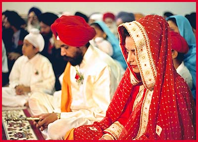
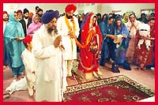

Sikh Wedding

Conclusion of the Religious Function
After the Lavan the Anand hymn by Guru Amar Das is recited. This is followed by lectures and kirtan. The religious ceremony is formally concluded by the entire congregation standing for the final Ardas of the marriage. After this Sri Guru Granth Sahib is now opened to any page at random and the hymn is read out as the days order from the Guru for the occasion (hukamnama). Karah Prashad, ceremonial sacremental pudding is then distributed to everyone to mark the formal conclusion of the ceremony.
|  The couple sit and listen to the Anand Sahib hymn. |
|||
|
|||
|  The final Ardas is performed. |
Karah Prashad is distributed to everyone. |
||